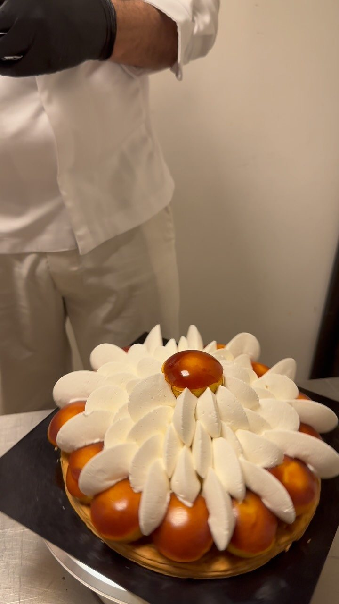

Béchir Hamed, notre formateur
28 ans de métier, une reconnaissance bien au-delà de la Provence, et une équipe qu'il a formée aux gestes de la pâtisserie fine.

Ce qu'il a transmis à l'équipe
Au laboratoire de L'Arbre à Pain, ce sont nos pâtissiers qui pétrissent, tempèrent, pochent et glacent chaque jour. Ces gestes, ils les ont appris auprès de Béchir Hamed, avec une idée fixe : une pâtisserie doit donner envie avant même d'être goûtée, et tenir sa promesse à la première bouchée.
C'est cette exigence qui guide aujourd'hui les trompe-l'œil de la maison, réalisés par notre équipe : des fruits plus vrais que nature, travaillés comme des sculptures, mais pensés d'abord pour le goût.
« Le visuel attire. Le goût fait revenir. Il faut les deux, sinon ce n'est pas de la pâtisserie. »
Le formateur
Reconnu à l'international pour son travail, Béchir Hamed partage aujourd'hui son savoir-faire avec des professionnels et des passionnés. Trompe-l'œil, entremets, travail du chocolat, pochage : il enseigne les gestes, mais surtout la méthode et la rigueur qui vont avec.
C'est lui qui a formé l'équipe de L'Arbre à Pain. Les trompe-l'œil et les entremets de la maison sont réalisés chaque jour par nos pâtissiers, avec la méthode qu'il leur a transmise.
Ce qu'il nous a transmis
Le beau et le bon, ensemble
Une création n'entre en vitrine que si elle réussit les deux.
Le fait maison, sans raccourci
Crèmes, pâtes, inserts, glaçages : tout est fabriqué sur place.
La création originale
Pas de copie. Chaque pièce part d'une idée, d'un fruit, d'une saison.
Une question, une création ?
Écrivez-nous en quelques lignes, nous vous répondrons rapidement.